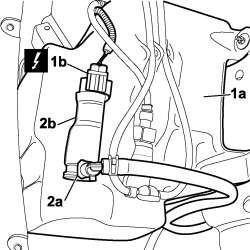

5050D20 HEADLAMP WASHER PUMP - R+R
- Path
- Procedures > 50 AUXILIARY UNITS > 5050 SCREEN WASHERS AND HEADLAMP WASH/WIPE > 5050D HEADLAMP WASH/WIPE > 5050D20 HEADLAMP WASHER PUMP - R+R
- Kind
- repair procedure (removal / refitting; the operation number is the code)
- Applies to
- all engines; all production periods
- Interactive page
- https://sloeber94.github.io/elrnDB-fCrm/en/#/194000661
Applies to: all engines; all production periods
 Removing
Removing
 Refitting
Refitting- Disconnect the negative battery terminal.
Description | Connector | |
|---|---|---|
BATTERY |
Op. 4450B02 LEFT FRONT WHEEL - R.R
Op. 7055B90 LEFT FRONT WHEEL ARCH LINER - R.R.
1. Drain the reservoir (1a) and disconnect the electrical connection (1b).
Description | Connector | |
|---|---|---|
1b | HEADLAMP WASHER ELECTRIC PUMP MOTOR |
2. Working on the retaining clip (2a) disconnect the pipe and release the electric pump (2b).

Applies to: all engines; all production periods
Refitting
Removing- Check that the electric pump is not damaged.
- Fit the electric pump in its housing.
- Connect the pipe.
- Connect the electrical connection.
Description | Connector | |
|---|---|---|
HEADLAMP WASHER ELECTRIC PUMP MOTOR |
- Refill the reservoir.
Op. 7055B90 LEFT FRONT WHEEL ARCH LINER - R.R.
Op. 4450B02 LEFT FRONT WHEEL - R.R
- Connect the negative battery terminal.
Description | Connector | |
|---|---|---|
BATTERY |
Topics linked from this page (4)
- 4450B02 LEFT FRONT WHEEL - R.R
- 7055B90 LEFT FRONT WHEEL ARCH LINER - R.R.
- A001 BATTERY
- N025 HEADLAMP WASHER PUMP MOTOR